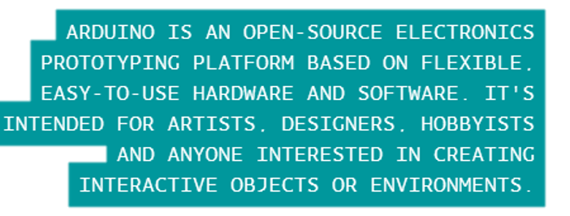

"Arduino" is, in my experience, often used unspecifically. I argue that there are three parts that make up the Arduino Development Environment
Arduino boards are often referred to as microcontroller by electronics neophytes. According to Arduino's website:
An Arduino board (like the Arduino Uno) isn't a microcontroller, but rather an electronics prototyping platform that contains a microcontroller. When you upload your code to your arduino board, what you are actually doing is uploading it to the microcontroller on the board. A microcontroller (also referred to as a microcontroller Unit, MCU, or µC) is the brains of an Arduino board, but your Arduino board also contains many other components (that you may or may not be using, based on your project).
After this great revelation, you must be wondering: 'Where is the MCU on my Arduino board?' For this tutorial, let's focus on the Arduino Uno board.
|
|
|
This is all rather edifying, but why would you care what the MCU on your Arduino is? Why bother learning about how the board works and what the Arduino "language" is?
Because, with the right hardware and software, you can program your MCU directly without a board and you can write non-Arduino software to run on your Arduino Board!
But that's not all! You also get these amazing perks once you actually understand wtf is going on delve deeper into how MCUs work.
1. You don't have to use the Arduino IDE anymore. Want to collapse your functions (hide them) while editing? Want to use the same editor to program your Arduino and build a website? Want to be 1337 and upload your Arduino code with the command line?
|
|
|
2. Learn to write programs in AVR-C as opposed to Arduino C++ and your code will be much smaller and faster. The Arduino Blink.ino file takes up 3% of the flash memory space on an Arduino Uno. An equivalent program wirtten in AVR-C would only take up 0.625% and it would run faster. That size and speed difference doesn't matter if you using Blink, but if are writing a more complex program, you will probably notice the difference. The Arduino also uses a bootloader so Arduino programs take up more space, but don't require a dedicated programmer.
3. Become a rich shibe An Arduino Uno costs $25, an ATMega328p costs less then $4. Not that much money for a single project, but if you plan to make a lot of things, that's quite a difference.
4. Size, Arduinos can be rather large. You can make your projects a lot smaller if you build the circuit yourself.
Ready to learn? AVR-C Tutorials.